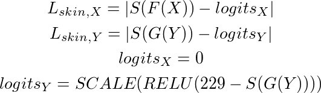
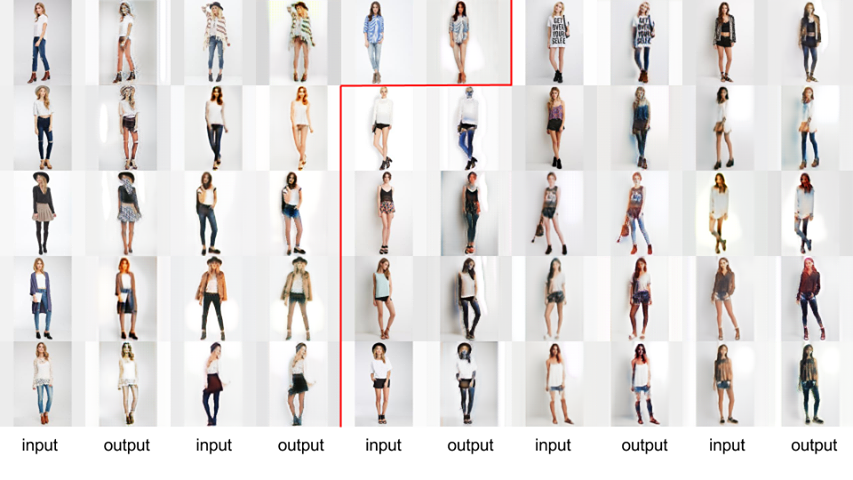

Introduction
Cycle GAN is a very powerful tool on transfering images between two drastically different sets of images. However, if we generalize the task to similar datasets and more specific task, i.e. people wearing long pants and people wearing short pants, Cycle GAN did not perform as well.
It is usually believed that in the GAN architecture, the discriminator needs to imporve itself along with the generator in order to give reasonable penalty and hint to the generator. However, in real situations, one of the two components in the network is still having some sort of advantages compare to the other one. Therefore, it is reasonable in this stage to introduce the role of a teacher to the network.
In our project we tried to introduce the role of an external ‘teacher’, who gives additional hint to the generator or the discriminator to do the task better.
Our Goal
What is our goal
- Detect the clothes in a picture and change its texture and color
- Changing the clothes will not cause drastic change towards the skin and hairs of a person.
What is not our goal
- Changing the clothes does reflect the size of the clothes(eg, S, M, L, XL).
Our data
- Clothes data: In Shop Clothes Retrieval Benchmark by Deep Fashion from CUHK
- Segmentation data: HumanParsing Dataset from https://github.com/lemondan/HumanParsing-Dataset
There are arround 50000 images in the data set. We selected ~1000 images from the dataset for training for each of the two groups (long and short pants). We used some of the remaining images for testing.
There are arround 100K data in this dataset. We used ~2500 images for training and 997 for testing.
The ground truth images are labelled with numbers, we used python program to filter out those areas for legs and pants as the ground truth training set for our own model.
Our code
- We used the cycle GAN implementation completed by Van Huy (Available here)
- Our code for training is available here
Network Architecture
Cycle GAN
We followed the cycle GAN architecture described in this paper.
Segmentation Network
We used a encoding - decoding network for segmentation. There are three groups of convolutional layers in the encoding and the decoding part of the network, each consisted of two convolutional layers with batch normalization and relu activation and one max pooling / unsampling layers for encoding / decoding jobs. For the unsampling layer, the input of the corresponding max pooling layer is also added to the output to restore more attribute from the original graph. Below is a summarized graph of the architecture from here.
The original work on this encoding - decoding network can be found here.
Our methods and results
Method 1: The original cycle GAN implementation (No teacher)
This yeilds not so satisfactory result due to the lack of difference between the two training groups. Unlike the picture <-> monnet or horse <-> zebra training, in which great difference and pattern could be found among the two training sets, in our case it is not so easy for the model to identify the difference between pants and shorts.
Another reason for unsatisfactory result is that the area that we want to perform style transfer on is usually too detailed for cycle GAN, which is good at pixel to pixel transfer for two sets of images.
CycleGAN Result
Method 2: Giving hint directly to the discriminator (Discriminator’s Teacher)
Segmentation Generative Loss Function
Inspired by the encoding-decoding image segmentation algorithm, we introduced the third method that gives hint directly to the discriminator. In the encoding-decoding image segmentation algorithm, whenever the network is unsampling a layer, the original mapping before pooling is also added to the layer. Since during the encoding stage, certain amount of semantic meanings of the original image is preserved, the unsampled layer will preserve more infromation about the image, which helps to make decoding performs better.
Therefore, in our case we used an image segmentation alroithm to segment our the area that we want the network to focus on, and then changed the input of the discriminator to help discriminator. A sample segmentation output is shown below.

The Seg function in the equation represents the Segmentation network. It will return a mapping of pants and legs labelled with 1 and otherwise 0 of the original image. Our implementation of segmentation network takes a typlical encoding-decoding architecture and followed the that from the project completed by Jakub Naplava (could be found on https://github.com/arahusky/Tensorflow-Segmentation)
We have also tried another input of the discriminator
Where I is the original input, S(I) is the segmented map and lambda is a hypervariable.
Experiments
This did not turn out to be a great method to do the task. The generated results were even worth than the results without such boost to the discriminator.
Segmentation Result
Method 3: The skin_loss loss function (Generator’s Teacher)
Skin Loss Functions

We used a simple algorithm to detect skin on the picture and then run cycle GAN with this new loss function. The basic idea is that when we transfer from pants to shorts the skin area decreases and grows when going the other way. The new loss function is supposed to be able to give some sort of ‘hint’ to the discriminator on which way to go. Specifically in our model X represents long pants and Y represents short pants.
The algorithm detects skin area by its RGB value. The condition we used in our model is R>95 and G>40 and B>20. The S function in the above equation represents such classification function.
We then used experiments to find the value proper for constructing the logits of Y, and we found out that the result achieved by 229 yeilds the best result.
Experiment
We had better result with this loss function. This is a reasonable result since in our case, the task is specific to a certain area of the image. Therefore, it will be easier for the discriminator to improve itself then the generator. Giving some hint to the generator will thus result in better 'cooperation' between the two components.
Skin Loss Result
Results on the left of the line are for transferring leggins to shorts; results on the right of the line are for transferring shorts to leggings. This result shows the progressive changes of our model. For each of the two halves, our model could preserve more attributes that we do not want the model to change and change those that we want to model to change more accurately.

Skin Loss Training Curves
Discussions
Although the loss function we had for method two looks specific to the use of long and short pants, we do think that it is possible to generalize the loss to other situations. One thing that supports this hypothesis is the existence of the threshold 229 found by experiment. It is reasonable to believe that in other situations, a different threshold will be able to 'teach' the model better.
However, there are also several disadventages of using this loss function. The first is that this is a very rough skin detection algorithm and does not give very accurate ‘hint’ to the discriminator. Therefore in some cases the loss function, rather than giving hints, actually confuses the discriminator and generator.
Another one is that this loss function is too specific to our cases. We are training between pants and shorts, which has the great attribute that skin area changes drastically. If there is no such property for other training pairs, or if this other property is very hard to represent, our method will not work anymore.
Method 4: Loss function in more sophisticated way (Additional Tutoring for Generator)
Skin Loss with Segmentation
This method addresses the first disadvantage mentioned in Method 2. Instead of using a very rough loss function , we used segmentation mapping to differentiate between clothes and skin.
The Seg function in the equation is similar to that in the previous part. The only difference is that this seg function returns a mapping only to leg exposed to the air.
Experiments
We trained this model with several different value for the threshold in the skin loss function. The results did not trun out to be better than the results achieved by method 2 in most cases.
Skin Loss with Segmentation Result
Discussions
Our results proved that it is possible to add a loss function as a teacher to cycle GAN in order to have better results. Although we have only been successful on adding a loss function to the generator, it is not impossible to introduce a teacher to the discriminator of for Cycle GAN.
We also encountered the interesting phenomenon that more specific loss function does not always give better results. In our opinion, this phenomenon might have been caused by the weakness of the more specific loss function. A more specific loss function means that it will focus on a smaller part of image and thus gives weaker gradients than other loss functions.
Acknowledgements
Cycle GAN
Unpaired Image-to-Image Translation using Cycle-Consistent Adversarial Networks, arXiv preprint arXiv:1703.10593, Zhu, Jun-Yan and Park, Taesung and Isola, Phillip and Efros, Alexei A
Human Parsing
Deep Human Parsing with Active Template Regression, Pattern Analysis and Machine Intelligence, IEEE Transactions on, Xiaodan Liang and Si Liu and Xiaohui Shen and Jianchao Yang and Luoqi Liu and Jian Dong and Liang Lin and Shuicheng Yan
Pattern Analysis and Machine Intelligence, IEEE Transactions on, ICCV, Xiaodan Liang and Chunyan Xu and Xiaohui Shen and Jianchao Yang and Si Liu and Jinhui Tang and Liang Lin and Shuicheng Yan
In Shop Retrieval
DeepFashion: Powering Robust Clothes Recognition and Retrieval with Rich Annotations, Proceedings of IEEE Conference on Computer Vision and Pattern Recognition (CVPR), Ziwei Liu, Ping Luo, Shi Qiu, Xiaogang Wang, and Xiaoou Tang